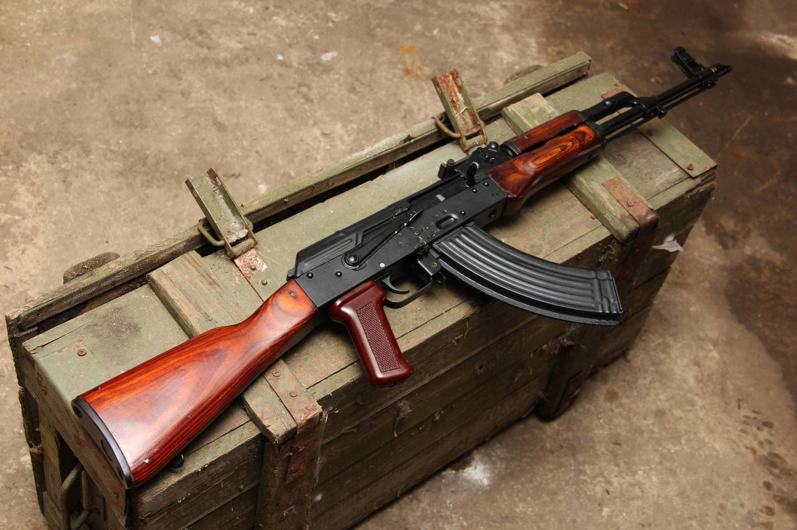
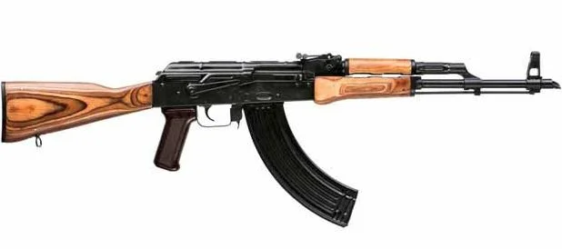

Автомат принятый на вооружение в СССР в 1949 году. Был сконструирован в 1947 году М.Т.Калашниковым, после провала АК-46 на испытаниях 
56-А-212
К 1959 г. завершилась серьезная модернизация конструкции автомата Калашникова. В этом же году новая модель была принята на вооружение под названием АКМ («Автомат системы Калашникова модернизированный»). Подобно своему предшественнику, новый автомат поступал в войска в двух вариантах — с деревянным прикладом (АКМ) и с откидным металлическим прикладом (АКМС), позволяющим стрелку в сложенном состоянии иметь компактное оружие. АКМ полностью соответствовал требованиям военной доктрины СССР тех лет. Он был максимально дешевым, надежным и простым, хотя при этом несколько пострадали удобство использования и точность стрельбы. 